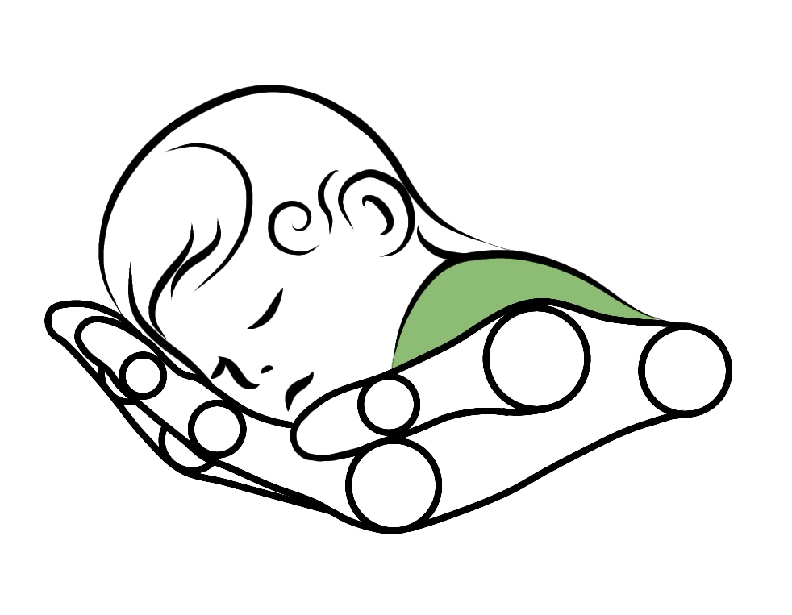

Telefon
Adres pracowni
Polski Związek Głuchych — Oddział Kujawsko-Pomorski
ul. Bernardyńska 3, 85-029 Bydgoszcz
Zeskanuj kod QR, aby zgłosić dziecko

Projekt naukowo-badawczy
BabyTrack AI
Uniwersytet Kazimierza Wielkiego w Bydgoszczy · Uniwersytet Medyczny w Poznaniu
Szukamy niemowląt w wieku 2–3 miesięcy do udziału w badaniu naukowym. Badanie jest bezpłatne, nieinwazyjne i całkowicie bezpieczne — opiera się wyłącznie na obserwacji ruchów dziecka kamerami, bez markerów i bez kontaktu fizycznego.
2–3 mies.
wiek dziecka w 1. etapie
2 wizyty
etap 1 i etap 2, to samo miejsce
60 min
tyle trwa jedna wizyta
0 zł
udział całkowicie bezpłatny
Wychwycenie zaburzeń wtedy, gdy terapia jest najskuteczniejsza.
Fizjoterapeuta dziecięcy.
Bez markerów i kontaktu. Rodzic obecny przez cały czas.
Pisemna informacja zwrotna i rozmowa ze specjalistą.
~ 60 minut · PZG, Bydgoszcz
Ten sam zespół, to samo miejsce · Bydgoszcz
Udział w obu etapach jest kluczowy. Dopiero porównanie momentu 2–3 mies. i 7–8 mies. pozwala odróżnić chwilowe wahania od rzeczywistych wzorców rozwoju.
Telefon
Adres pracowni
Polski Związek Głuchych — Oddział Kujawsko-Pomorski
ul. Bernardyńska 3, 85-029 Bydgoszcz
Zeskanuj kod QR, aby zgłosić dziecko